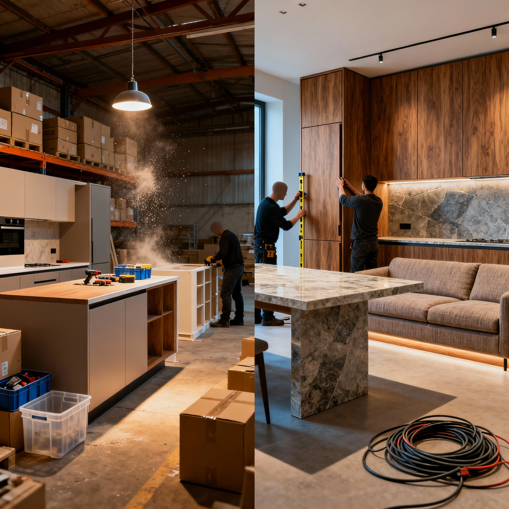

Недавно читал пост одного мебельщика, который отлично поймал суть: сильный продукт делает маркетинг дешевым, а слабый – бессмысленным. Он правильно сказал, что люди готовы рекомендовать компанию, если она дает "нормальный продукт" – это когда красиво, качественно, надёжно, вовремя и по-человечески.

Но тут начинается ловушка: большинство коллег сразу начинают думать, как бы им фасады сделать лучше или фурнитуру надежнее.
Они не понимают, что продукт – это уже давно не только товар - это товар + сервис, и именно эта пропорция определяет, кто вы и сколько вам платит рынок.
Дарю вам два новых слова для более глубокого анализа своего бизнеса, которые помогут вам понять, что вы продаете на самом деле: «ПРОДУСЕРВИС» и «СЕРВОДУКТ».
Продукт = Товар (Мебель) + Сервис (Процесс)
Наш конечный продукт - это не просто кухня. Это вся цепочка: от первого звонка, через "по-человечески" замеры, до "вовремя" установки и постгарантийного сопровождения.
В зависимости от того, что в приоритете (и что владелец заложил как базовую ценность!), мы продаем одно из двух:
1. «ПРОДУСЕРВИС» (Product-Service)
Здесь продукта больше, сервиса меньше (как в себестоимости, так и в фокусе).
Идентичность/Ценности: Экономия, скорость, рациональность. Мы фокусируемся на оптимизации производства и цены.
Сегмент: Часто эконом/средний.
Пропорция (оценочно): 80% -70%-мебели и 20% -30%-сервиса.
2. «СЕРВОДУКТ» (Service-Product)
Здесь сервиса больше, продукта меньше (относительно).
Идентичность/Ценности: Премиальность, безупречность, снятие рисков, эксклюзивность. Мы продаем не кухню, а идеальный клиентский опыт и спокойствие.
Сегмент: Премиум/люкс.
Пропорция (оценочно): 30% мебели и 70% сервиса.
Почему это напрямую связано с базовыми ценностями?
То, что коллега назвал "по-человечески" – это ваш сервис. И вы не сможете продавать СЕРВОДУКТ, если ваша личная базовая ценность – экономия (вы будете резать расходы на людей, контроль и сопровождение).
И наоборот: если вы перфекционист, не терпящий рисков и готовый вкладываться в идеальный процесс, вы обречены продавать дорогой СЕРВОДУКТ, даже если пытаетесь сэкономить.
Не пытайтесь менять фасады, если вам нужно менять сервис. И, главное, не пытайтесь внедрять чужие "рабочие" инструменты, пока не поняли, какой ПРОДУКТ вы продаете (и готовы ли ваши базовые ценности его потянуть!)
Ваш "нормальный продукт" — это всегда правильный баланс между ПРОДУСЕРВИСОМ и СЕРВОДУКТОМ.
P.S. Текст мой, видео ИИ.